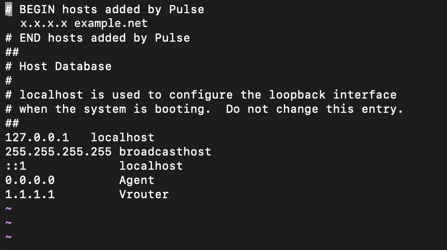
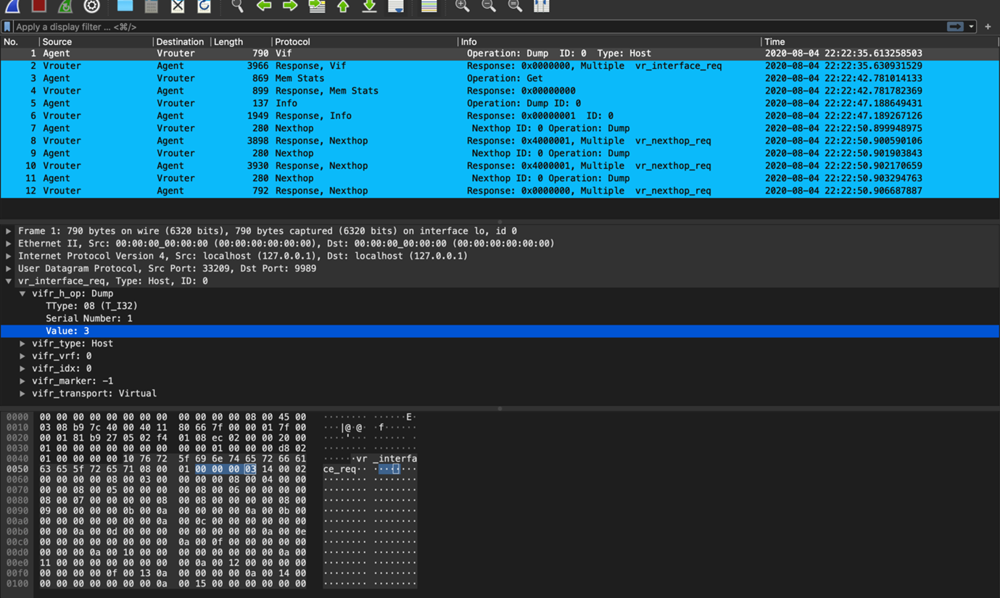

sandump command. It
gives summary of each message which is being transferred between the
agent and the vRouter. (vrouter-agent-dpdk)[root]$ ./sandump -h Sandump - Sandesh dump utility
Usage:
./sandump -w <filename> [filename to write the sandesh packets]
./sandump -c <filename> [force cleanup]
(vrouter-agent-dpdk)[root]$
(vrouter-agent-dpdk)[root]$ ./sandump -w <filename>.pcap Dumping into <filename>.pcap Running as user "root" and group "root". This could be dangerous. Capturing on 'lo' 12 ^C ./sandump: closing... (vrouter-agent-dpdk)[root]$
The command generates a file which contains sniffed bytes converted in to the pcap format.
(vrouter-agent-dpdk)[root]$ ./sandumpRunning as user "root" and group "root". This could be dangerous.
Capturing on 'lo'
1 2020-08-04 09:51:01.233639252 Agent → Vrouter Vif 790 Operation: Dump Type: Host ID: 0
2 2020-08-04 09:51:01.251279611 Vrouter → Agent Response, Vif 3966 Response: 0x0000000, Multiple vr_interface_req
3 2020-08-04 09:51:33.290323560 Agent → Vrouter Mem Stats 869 Operation: Get
4 2020-08-04 09:51:33.290964111 Vrouter → Agent Response, Mem Stats 899 Response: 0x00000000
5 2020-08-04 09:51:46.175797696 Agent → Vrouter Info 137 ID: 0 Operation: Dump
6 2020-08-04 09:51:46.176494123 Vrouter → Agent Response, Info 1949 Response: 0x00000001 ID: 0
7 2020-08-04 09:51:58.920197081 Agent → Vrouter Nexthop 280 Nexthop ID: 0 Operation: Dump
8 2020-08-04 09:51:58.920905495 Vrouter → Agent Response, Nexthop 3898 Response: 0x4000001, Multiple vr_nexthop_req
9 2020-08-04 09:51:58.922297667 Agent → Vrouter Nexthop 280 Nexthop ID: 0 Operation: Dump
10 2020-08-04 09:51:58.922425514 Vrouter → Agent Response, Nexthop 3930 Response: 0x4000001, Multiple vr_nexthop_req
11 2020-08-04 09:51:58.923525453 Agent → Vrouter Nexthop 280 Nexthop ID: 0 Operation: Dump
12 2020-08-04 09:51:58.926925821 Vrouter → Agent Response, Nexthop 792 Response: 0x0000000, Multiple vr_nexthop_req
^C12 packets captured
./sandump: closing...
(vrouter-agent-dpdk)[root]$
Follow the procedure to analyze the packets in Wireshark for Windows OS.
- Download the
sandump_wireshark_pluginfolder from the https://github.com/tungstenfabric/tf-vrouter/tree/master/utils/sandump repository. - Copy the
sandump_wireshark_plugin/main.luafile inC:\Program Files\Wireshark\plugins\folder.Create new lua folder in
C:\Program Files\Wireshark\and copy the rest of the lua files present insandump_wireshark_pluginfolder to the newly created lua folder.Note Wireshark installation directory for 32-bit Windows is present in
C:\Program Files (x86)\Wireshark\and for 64-bit Windows is present inC:\Program Files\Wireshark\. - Run Notepad as administrator and open
C:/Windows/System32/drivers/etc/hostsfile. - Add the host names with the following details:
Agent IP address—0.0.0.0
vRouter IP address—1.1.1.1
Figure 1 shows the host file with the required IP addresses.
Figure 1: host file  - Open the pcap file generated from Sandump tool for further
debugging in Wireshark.
Figure 2: File debugging in Wireshark 
- Download the
Follow the procedure to analyze the packets in Wireshark for macOS.
- Download the
sandump_wireshark_pluginfolder from the https://github.com/tungstenfabric/tf-vrouter/tree/master/utils/sandump repository. - Copy the
sandump_wireshark_pluginfolder in/Applications/Wireshark.app/Contents/PlugIns/wiresharkdirectory which is also know as Global Lua Plugins directory. - Un-comment the
package.prepend_path(…)line in main.lua, common.lua and helpers.lua files found insandump_wireshark_pluginfolder. - Navigate to Wireshark > About Wireshark > Folders > Personal configuration to edit the configuration.
- Create hosts file in the Personal configuration directory and add the host names with the following details:
Agent IP address—0.0.0.0
vRouter IP address—1.1.1.1
Figure 3 shows the host file with the required IP addresses.
Figure 3: host file - Navigate to Wireshark > Preferences > Name Resolution and check Resolve network (IP) addresses option.
Figure 4: Wireshark—Preferences 
- Open the pcap file generated from Sandump tool for further
debugging in Wireshark.
Figure 5: File debugging in Wireshark
- Download the